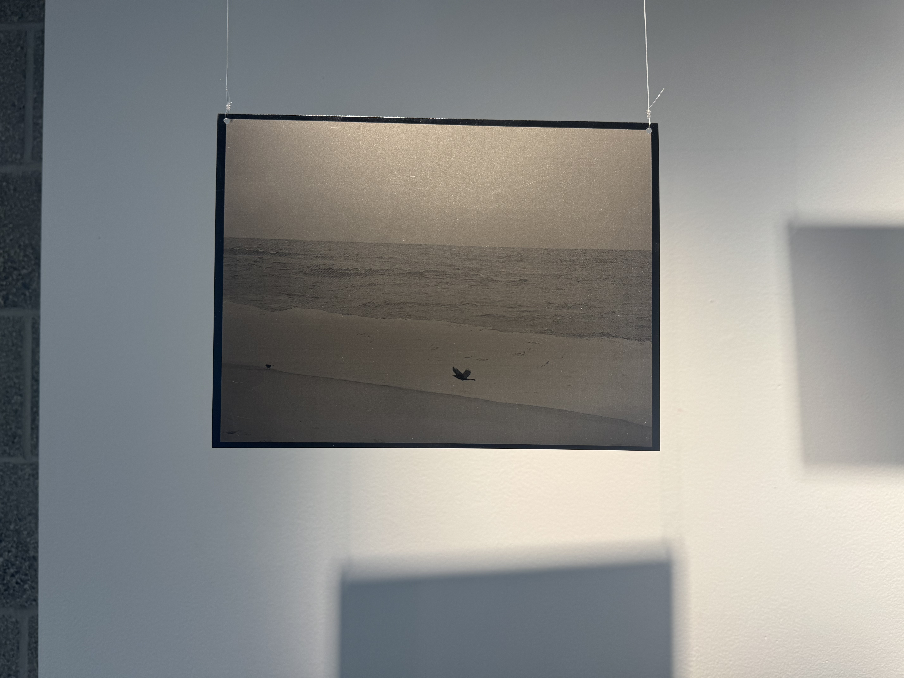
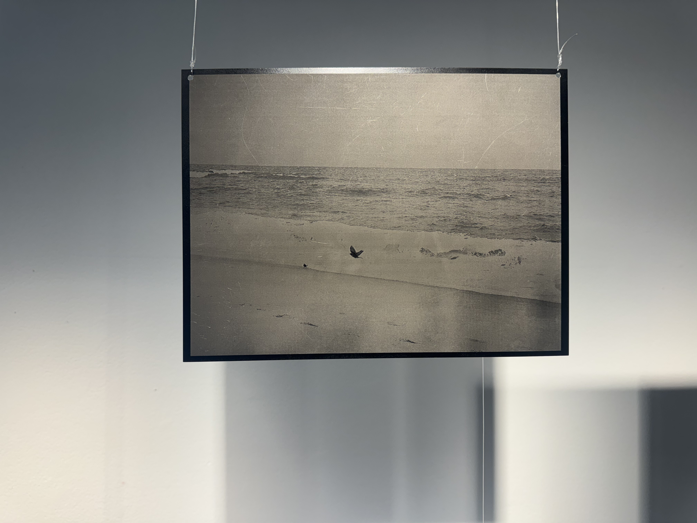
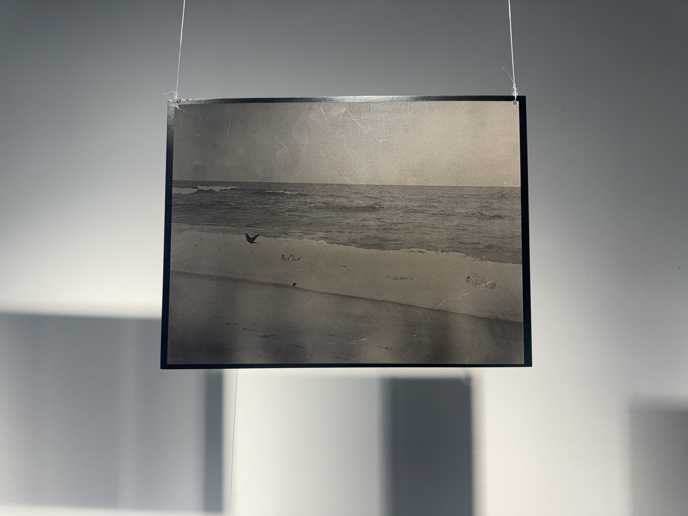
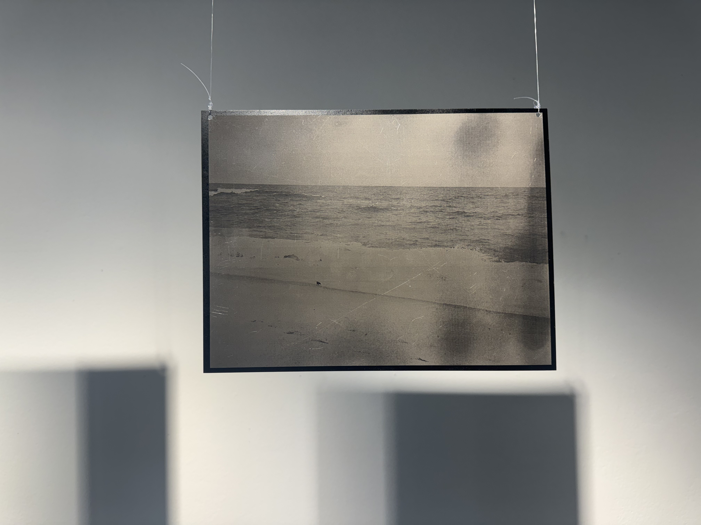
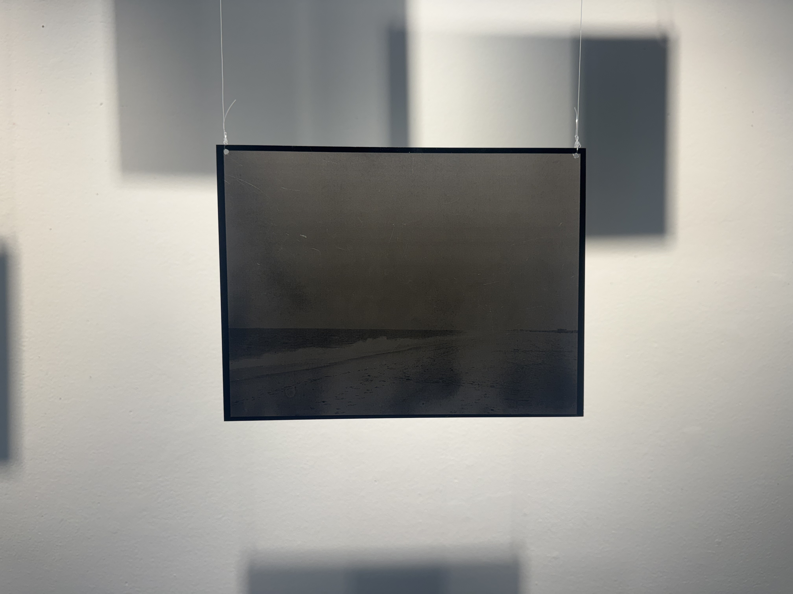

On Remembering
Laser engraving · Aluminum sheet & fishing line · 10″ × 7.5″

I took these photographs during a trip to Long Island in the summer of 2025. I remember standing alone by the Atlantic Ocean on a cloudy day, listening to the incredibly loud waves and wind, and watching the birds flying over the beach. I knew that I would probably never return to this place, and there was something strangely melancholic about knowing that, even while I was still there. I think this feeling extends beyond places, to the people we meet and the relationships we form. Things inevitably change with time, and while it can be difficult to let go of what once was, there's also something comforting about the passage of time and how it allows us to move on. Laser-engraved onto the matte side of aluminum sheets, the photographs become faint and difficult to make out. Their appearance changes with the light and where you stand, making it difficult to settle on a single, clear image.




